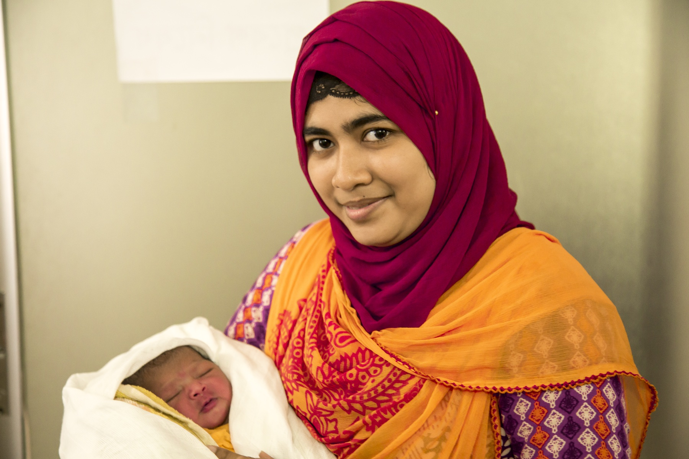

O que esta plataforma funda, cede e deixa em aberto
A última página fecha o contrato com a casa: lista o que a A14 fundou, o que cede a A15 e A16, o que linka com A9, e a dívida A12 que permanece aberta. Sequência segue em modificações do organismo materno.
ObstetríciaParte F · FronteirasItens 134–142Meta + checklist
Tópico 1
O que a A14 funda
A14 funda: tríade presunção / probabilidade / certeza · epônimos do ninho (Piscacek · Hegar · Goodell · Noble-Budin · Chadwick · Jacquemier · Hartmann · Puzos) · relógio de certeza clínica (sonar ~10–12 · Puzos ≥~14 · Pinard/MF ~18–20) · hCG / TIG / beta · curva 48 h · limiares 1.000 / 1.500–2.000 · relógio US 4-5-6-7 · CCN 6-13+6 · regra DUM × US · o caso âncora do posto (36 anos, G3, 27/mar → 03/mai = 5s2d).
Tópico 2
O que A15 e A16 aprofundam
[PONTE-A15]Modificações do organismo materno e a explicação de sintomas/achados como adaptação. A15 é dona da fisiologia adaptativa (náusea, mama, pele, constipação, dispneia, edema etc. como modificação — não como re-lista de presunção). A paciente do caso reaparece em A15 como gancho de sintomas.
[PONTE-A16]Pré-natal operacional (suplementos, vacinas, calendário de exames, divergências MS × sociedades, aconselhamento genético). Aqui só se anunciou que existe e cai em prova — não se desenvolve.
Tópico 3
Links A9 e fronteiras (aborto/ectópica)
[LINK-FORWARD A9]Ciclo menstrual e corpo lúteo completos = A9; aqui só o elo hCG resgata o corpo lúteo (P8) — linkar, não reabrir.
Abortamento e ectópica são citados (curva/limiar em P9); algoritmos completos não são deste tema — a próxima vez que o tema voltar, a profundidade pede outra plataforma.
Tópico 4
Dívida A12 e o contrato anti-repetição
[DÍVIDA-A12-ABERTA]Conjugatas / estreitos / pelvimetria / pelve maior×menor: não aparecem aqui. Não marcar este tema como pagamento da dívida da anatomia óssea. A contagem literal na fonte = 0; não fabricar pagamento.
[LINK-FORWARD A12–A13]Anatomia pélvica não se reabre: nenhum item nuclear de osso, assoalho, ureter ou artéria uterina. Útero · colo · vagina · vulva entram aqui apenas como sinais de gravidez, nunca como atlas.
Contrato para as plataformas seguintes:não reensinar a tríade nem o relógio US/hCG; podem citar e linkar esta. Próximo passo natural: modificações do organismo materno — a paciente do caso reaparece como gancho de sintomas.
Mapa de fronteiras — A14 funda, A15/A16 aprofundam, A9 linka, A12–A13 base, dívida A12 abertaA caixa A14 no centro marca o que esta plataforma funda (tríade, epônimos, relógios, hCG, US, caso). Setas saem para A15 e A16 (aprofundam) e A9 (linka). A faixa A12–A13 em cima é a base já construída. A faixa vermelha tracejada embaixo é a dívida A12 — conjugatas, estreitos, pelvimetria, 0 hits aqui.Esquema autoral · SVG-piso (S12)

Continuidade do cuidado pré-natal — da hipótese ao acompanhamento
A imagem encerra o arco: depois de classificar (P3), prever (P10–P11) e anunciar a gestação, o cuidado continua — consultas de retorno, suplementação, calendário de exames, vacinas, aconselhamento. É o mundo A15/A16 que a A14 só anuncia.
Tania, midwife for UNFPA in Kutapalong refugee camp — antenatal check-ups. Photo: Anna Dubuis / DFID - UK Department for International Development, 2017. Licensed under CC BY 2.0. Source: https://commons.wikimedia.org/wiki/File:Tania_is_a_midwife_for_UNFPA_in_Kutapalong_refugee_camp._Every_day_around_30_women_come_to_the_clinic_for_check-ups.jpg
Quiz — fixação
Fisiologia adaptativa da náusea e da mama deve ser aprofundada em:
Gabarito B.Fisiologia adaptativa da náusea e da mama é tema de modificações do organismo materno (A15). Aqui a função é rótulo de degrau (presunção).
(A)re-listar presunção viola o contrato anti-repetição — A15 é a dona da fisiologia.
(C)ectópica é fronteira citada (P9) — não tema de aprofundamento aqui.
(D)Pinard é instrumento de certeza clínica — não tema de fisiologia adaptativa.
Por que cair na A:a tentação de “completar” o sintoma aqui — a regra é ceder a A15.
Conjugatas e estreitos:
Gabarito B.Contagem literal da fonte A14 = 0. Não marcar este tema como pagamento da dívida da anatomia pélvica.
(A)Fabricar pagamento = violar o contrato de honestidade da casa.
(C)CCN data 1º trimestre — conjugatas medem pelve. Eixos diferentes.
(D)Puzos é rechaço fetal (certeza, ≥~14 sem) — não é medida de pelve.
Por que cair na A:a tentação de fechar a pelve em todo tema obstétrico. A regra é não inventar.